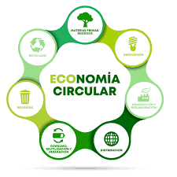

La Economía Circular es un modelo alternativo a la economía lineal que busca mantener los recursos en uso el mayor tiempo posible, reducir los residuos y aprovechar al máximo los materiales. Su objetivo principal es cerrar el ciclo de vida de los productos, de manera que los materiales se reutilicen, reparen, reciclen o regeneren, en lugar de desecharse.
Actividad_Final_UD1_Economia_Circular_exeLearning
Economía Circular
Principios de la Economía Circular
Diseñar para durar: crear productos resistentes, modulares y fácilmente reparables.
Mantener los productos y materiales en uso: fomentar la reutilización, reparación y actualización antes de reemplazarlos.
Regenerar los sistemas naturales: devolver al medio ambiente los recursos de forma sostenible, reduciendo el uso de materias primas vírgenes.
Reducir el desperdicio desde el origen: aplicar estrategias que minimicen los residuos desde el diseño del producto o servicio.
Las “R” de la Economía Circular
Las acciones clave de este modelo suelen representarse con varias “R”, que resumen sus estrategias principales:
Repensar: cuestionar nuestros hábitos de consumo y buscar opciones más sostenibles.
Reducir: consumir menos recursos y energía.
Reutilizar: dar nuevos usos a los productos o componentes.
Reparar: arreglar los equipos antes de sustituirlos.
Reciclar: transformar los materiales para fabricar nuevos productos.
Recuperar: aprovechar materiales o energía de productos que ya no pueden reutilizarse.
Rediseñar: crear productos con criterios ecológicos y eficientes.
Ejemplos de Economía Circular en el sector TIC
Reciclaje de residuos electrónicos (RAEE): recuperación de metales y componentes para fabricar nuevos dispositivos.
Proyectos como Fairphone: smartphones diseñados para ser modulares, duraderos y fácilmente reparables.
Migración a la nube (Cloud Computing): reduce la necesidad de servidores físicos y optimiza el consumo energético.

Obra publicada con Licencia Creative Commons Reconocimiento Compartir igual 4.0